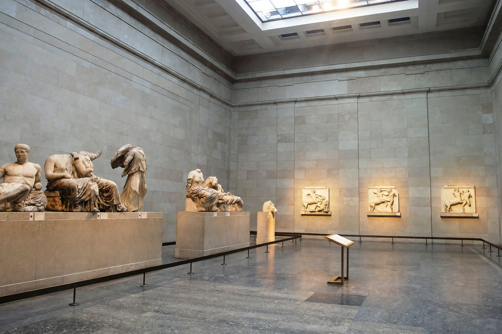

The Parthenon Marbles, also known as the Elgin Marbles, are a collection of Classical Greek marble sculptures — friezes, metopes and pedimental figures — originally part of the Parthenon and other buildings on the Acropolis of Athens. Removed in the early 19th century by agents of Lord Elgin, they are now principally in the British Museum in London, with the remainder in the Acropolis Museum in Athens.

Created under Phidias for Pericles' Parthenon (447–432 BC), the sculptures survived conversion to church and mosque, and the catastrophic 1687 Venetian bombardment. Between 1801 and 1812 Elgin's men, claiming an Ottoman firman, removed about half the surviving sculpture and shipped it to Britain; Parliament purchased it in 1816 for the British Museum.
Greece has formally requested return since the 1980s, arguing the removal lacked legitimate consent and that the marbles should be reunified in Athens, where the Acropolis Museum opened in 2009 with a Parthenon Gallery. The British Museum contends the acquisition was legal and that London provides a universal context. The dispute is a landmark case in cultural property and repatriation debates.